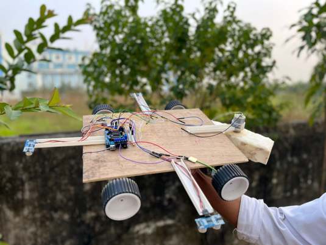

Our vision is to pioneer innovation and technology in the field of robotics and artificial intelligence, setting new standards for sustainable solutions and societal impact. As a team of five passionate undergraduate B.Tech students and two dedicated professors from the University of Engineering and Management, Kolkata, we embark on a journey fueled by curiosity, creativity, and a drive for excellence.
Our journey began as a part of our semester innovation project, where our Dean challenged us to develop a robot capable of cleaning solar panels efficiently. In our fifth semester, we rose to the challenge and successfully engineered a prototype version 1 robot using Arduino and Bluetooth technology. This initial success inspired us to push the boundaries further.
In our current semester, the sixth, we have expanded our horizons by developing an innovative app for object detection using smartphones. This app not only showcases our technical prowess but also demonstrates our commitment to leveraging technology for practical solutions.
Looking ahead to the future, we are determined to fulfill our Dean's vision by completing the development of a sophisticated solar panel cleaning robot. Powered by Raspberry Pi and integrated with advanced AI models, this next-generation robot will revolutionize the field of renewable energy maintenance.
Our vision goes beyond mere technical achievements; it encompasses a desire to make a tangible difference in the world. By harnessing the power of innovation and collaboration, we aspire to create a sustainable future where technology serves humanity and the planet. With unwavering dedication and a spirit of innovation, we are poised to make our vision a reality.
We are excited to announce our recent developments in the field of robotics. Our team has successfully developed a state-of-the-art robot designed specifically for solar panel cleaning. This innovative robot is equipped with advanced cleaning mechanisms and is capable of efficiently removing dust and debris from solar panels, thereby maximizing their efficiency.
The robot is controlled using Bluetooth technology, allowing users to remotely operate and monitor its cleaning functions with ease. Its user-friendly interface and intuitive controls make it accessible to users of all levels of expertise.
In addition to its cleaning capabilities, the robot also features autonomous navigation capabilities, enabling it to navigate complex environments and access hard-to-reach areas with precision.
To showcase the capabilities of our robot, we have prepared a demonstration video. Watch the video below to see our robot in action: